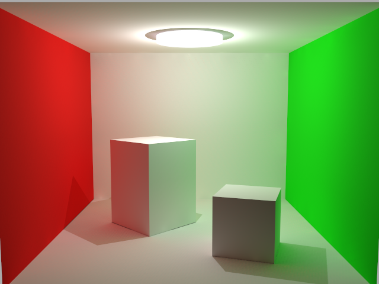
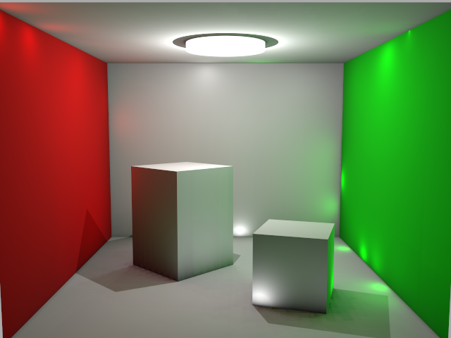
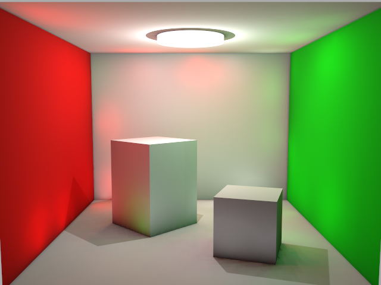
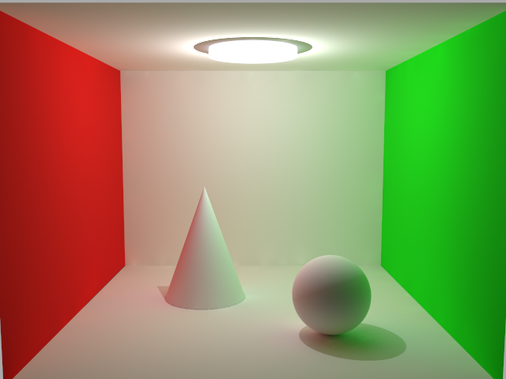
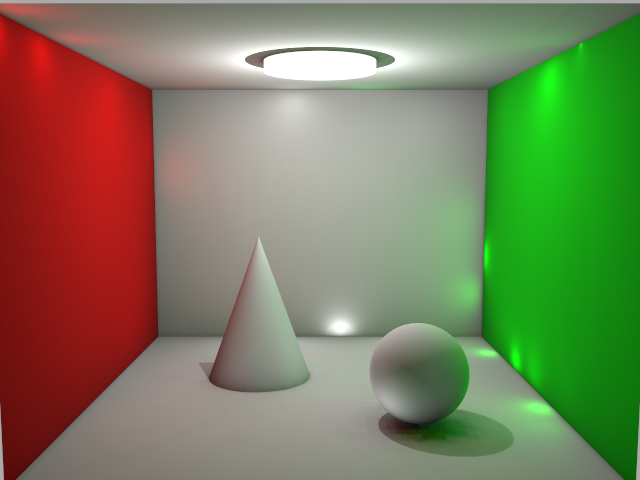
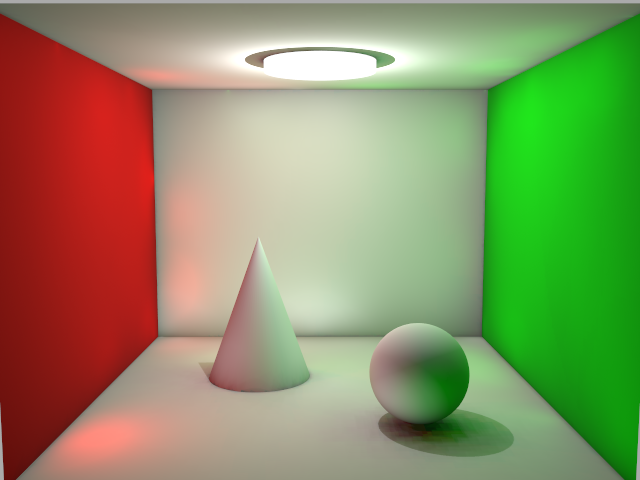
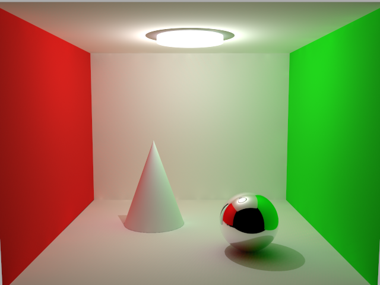
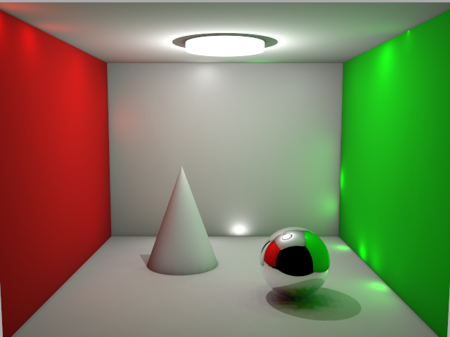
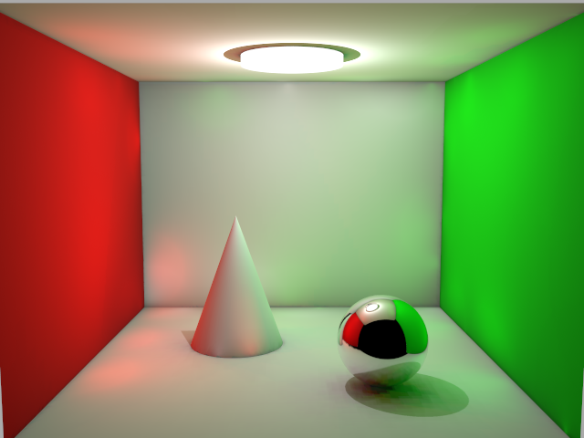

The new method improves substantially over the branch defaults, but does not meet the old lightmap fidelity. Keep the RIS renderer as the enabled baseline and the shadow-map renderer experimental. No BVH dependency was added to the new method.
Three Cornell scenes · 640×480 · NVIDIA Ampere · Chrome WebGPU. Quality uses Blender reference PSNR; timings include CPU submission and GPU completion. Startup includes renderer setup and 192 frames. Main comparisons use three fresh-browser repetitions. This is a static-camera comparison on one machine, not a full-suite or cross-hardware result.
| Scene | Old RIS | Original branch | Improved VPL |
|---|---|---|---|
| cornell-box-basic | 33.86 dB 3.13 ms 3.65 s startup |
18.35 dB 3.11 ms 2.24 s startup |
23.01 dB 2.97 ms 2.24 s startup |
| cornell-box-rounded | 34.57 dB 3.15 ms 4.19 s startup |
19.75 dB 3.77 ms 3.00 s startup |
24.00 dB 3.11 ms 2.25 s startup |
| cornell-box-metallic | 29.94 dB 2.92 ms 4.34 s startup |
19.85 dB 3.05 ms 2.71 s startup |
23.80 dB 3.16 ms 2.39 s startup |
Improved configuration: 128 GPU VPLs, up to eight diffuse reflections, 16× CPU candidate generation, source-power allocation, emissive triangles, spatially ordered flux importance resampling, 64×64 shadow faces and a three-world-unit distance clamp. The clamp is tuned for these Cornell scenes; it is not a universally optimal setting.
The old method samples every lightmap texel and explicitly handles near-field transport. The new method shares a small finite VPL set, uses approximate visibility and caps diffuse paths. Those approximations leave a fidelity gap even after including emissive surfaces. See the JSON report for both references, ablations and complete settings.








